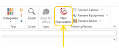
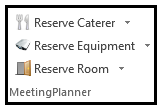
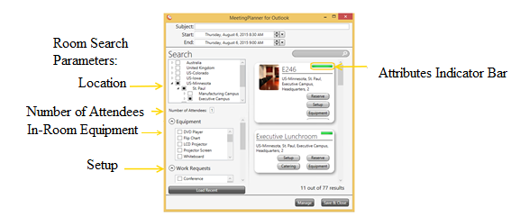

Quick Reference
Introduction
Meeting Planner simplifies room and resource scheduling with its interactive interface. It is used in conjunction with Microsoft Outlook/Exchange as a stand-alone application and with Meeting Planner Web Scheduler. It allows users to reserve rooms, catering, equipment, setup, videoconferencing and more. Notifications for reservation requests are automatically generated to facility support crews, and meetings synch to Microsoft Outlook and all other Meeting Planner applications (i.e., Web Scheduler, Floor Planner, Room Signs and Software).
Create Meeting in Microsoft Outlook
Create a meeting from the Outlook Calendar to include:
- Meeting date/time
- Subject
- Attendees
- A recurring pattern
- Notes
Access and View
Open Meeting Planner by launching the New Reservation tool from the Outlook calendar.

Quick Reserve

Use “Quick Reserve” to reserve an individual resource (catering, equipment). The feature is a short-cut to the ‘Room’ reservation window as well.
Room Search Parameters
Meeting Planner allows users to search for rooms according to Hierarchy, Number of Attendees, In-Room Equipment (fixed equipment), and Work Requests (room setup).
Select Hierarchy Location from Search Window
- Enable check the desired hierarchy location from the ‘Search’ window. Click on the arrows, next to each location, to narrow the search and view the hierarchy tree.
Enter the Number of Attendees
- Enter the Number of Attendees to include in the room search if the number exceeds the attendees invited from Outlook.
NOTE: Meeting Planner will default the number of attendees invited from Outlook +1 to include the reservation owner. A different number of attendees can be entered from the Meeting Planner application. Any room capacity conflicts will be indicated in red text in the ‘Room’ window.
Select In-Room Equipment
- Use the scroll bar and check next to the desired in-room equipment to include in the room search. In-room equipment that is not available is indicated in red text in the ‘Room’ window. Such equipment (if available) can be requested as portable equipment using the equipment tab in the identified room.
Select Work Request
- Use the scroll bar and check next to the desired setup (ie. conference, u-shape, videoconference) to include in the room search. If setup is not available, it is indicated in red text in the ‘Room’ window. Alternate setup options or rooms with videoconferencing capabilities can be requested using the setup and VC tabs from the ‘Room’ window.

Make Room Selection
Once all search parameter data is entered, use the scroll bar on the right side of the ‘Reservation’ window to view the available rooms.
View room description by clicking on any of the room names. Reservations can be made from the ‘Room Description’ window as well.
NOTE: At a glance, the green bar (in each room window) is a visual indicator of the amount of attributes available in response to the search parameters entered.
Setup and VC Tabs
Setup and Videoconferencing can also be added to the reservation using the associated tabs from the ‘Room’ window. The tabs must be used prior to reserving the room in order to make such arrangements.
Complete a Reservation
Once the room to reserve is identified:
- Verify the meeting Subject and date/time fields in the ‘MeetingPlanner for Outlook’ window and Reserve. Once reserved, the room status color will change to green.
- Select Save & Close from both Meeting Planner and Outlook applications.
- If attendees are invited, Send the notification from Outlook.
Add Resources
Once a room is reserved, add catering, portable equipment, and additional rooms as desired.
Add Catering
- Select Manage.
- Select Add caterer.
- Select button next to: Show all, Internal, or External to display desired catering vendor. View menu and additional catering information by selecting the vendor’s name.
- Select Pickup or Delivery.
- Use the scroll bar from the ‘Catering Order’ window to view all of the food categories and menu items.
- Click and drag the cursor over the “0” next to the desired catering item(s) and enter the quantity of menu items needed. Include additional Instructions to catering support crew when internal caterer is selected.
- Select OK.
- Select the delivery destination from the ‘Choose a Destination for Delivery’ window. Select OK to choose the default delivery room or create a new room reservation to use for delivery.
- Save & Close.
Add Equipment
- Select Manage.
- Select Add equipment.
- Use the scroll bar on the right side of the ‘Portable Equipment’ window for a full list of available portable equipment. View equipment description by clicking on the portable equipment name.
- Select Reserve (to check-in/out equipment) or Delivery next to the desired portable equipment. Include additional Instructions (if desired) to facility support crew when Delivery option is selected.
- Select Save & Close.
Add Room
- Select Manage.
- Select Add room.
- Use the scroll bar on the right side of the ‘Room’ window and Reserve the desired room to add to the reservation.
- Select Save & Close.
Create Recurring Meetings
The recurrence pattern of a meeting is created in Microsoft Outlook. All resources are reserved with the recurring series through Meeting Planner.
IMPORTANT: The recurrence pattern of a meeting cannot be changed once the reservation has been created.
Edit Meeting
- Select the existing meeting to edit from the Outlook Calendar and launch the Meeting Planner tool.
NOTE: If more than one room or resource is attached to the reservation, use the arrows to identify the (applicable) resource.
- Edit any of the following Save & Close:
- Subject, day, month, date, year, and/or time of meeting and Commit Date to save changes
- Catering using Edit Order and OK to save changes
- Equipment Delivery location and Instructions using Edit Delivery and OK to save changes
- Setup Instructions using Edit Setup and OK to save changes
Delete Meeting and/or Resources
- Select the meeting to delete from the Outlook Calendar and launch the Meeting Planner tool.
- Select the X to delete the reservation from the ‘Manage’ window. If more than one resource is attached to the reservation, select to identify the applicable resource, X to delete, check to Confirm Deletion.